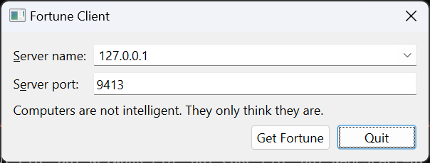

Fortune Client
Demonstrates how to create a client for a network service.
This example uses QTcpSocket, and is intended to be run alongside the Fortune Server example or the Threaded Fortune Server example.

This example uses a simple QDataStream-based data transfer protocol to request a line of text from a fortune server (from the Fortune Server example). The client requests a fortune by simply connecting to the server. The server then responds with a QString which contains the fortune text.
QTcpSocket supports two general approaches to network programming:
- The asynchronous (non-blocking) approach. Operations are scheduled and performed when control returns to Qt's event loop. When the operation is finished, QTcpSocket emits a signal. For example, QTcpSocket::connectToHost() returns immediately, and when the connection has been established, QTcpSocket emits connected().
- The synchronous (blocking) approach. In non-GUI and multithreaded applications, you can call the
waitFor...()functions (e.g., QTcpSocket::waitForConnected()) to suspend the calling thread until the operation has completed, instead of connecting to signals.
In this example, we will demonstrate the asynchronous approach. The Blocking Fortune Client example illustrates the synchronous approach.
Our class contains some data and a few private slots:
class Client : public QDialog { Q_OBJECT public: explicit Client(QWidget *parent = nullptr); private slots: void requestNewFortune(); void readFortune(); void displayError(QAbstractSocket::SocketError socketError); void enableGetFortuneButton(); private: QComboBox *hostCombo = nullptr; QLineEdit *portLineEdit = nullptr; QLabel *statusLabel = nullptr; QPushButton *getFortuneButton = nullptr; QTcpSocket *tcpSocket = nullptr; QDataStream in; QString currentFortune; };
Other than the widgets that make up the GUI, the data members include a QTcpSocket pointer, a QDataStream object that operates on the socket, and a copy of the fortune text currently displayed.
The socket is initialized in the Client constructor. We'll pass the main widget as parent, so that we won't have to worry about deleting the socket:
Client::Client(QWidget *parent) : QDialog(parent) , hostCombo(new QComboBox) , portLineEdit(new QLineEdit) , getFortuneButton(new QPushButton(tr("Get Fortune"))) , tcpSocket(new QTcpSocket(this)) { ... in.setDevice(tcpSocket); in.setVersion(QDataStream::Qt_6_5);
The protocol is based on QDataStream, so we set the stream device to the newly created socket. We then explicitly set the protocol version of the stream to QDataStream::Qt_6_5 to ensure that we're using the same version as the fortune server, no matter which version of Qt the client and server use.
The only QTcpSocket signals we need in this example are QTcpSocket::readyRead(), signifying that data has been received, and QTcpSocket::errorOccurred(), which we will use to catch any connection errors:
...
connect(tcpSocket, &QIODevice::readyRead, this, &Client::readFortune);
connect(tcpSocket, &QAbstractSocket::errorOccurred,
...
}
Clicking the Get Fortune button will invoke the requestNewFortune() slot:
void Client::requestNewFortune() { getFortuneButton->setEnabled(false); tcpSocket->abort(); tcpSocket->connectToHost(hostCombo->currentText(), portLineEdit->text().toInt()); }
Because we allow the user to click Get Fortune before the previous connection finished closing, we start off by aborting the previous connection by calling QTcpSocket::abort(). (On an unconnected socket, this function does nothing.) We then proceed to connecting to the fortune server by calling QTcpSocket::connectToHost(), passing the hostname and port from the user interface as arguments.
As a result of calling connectToHost(), one of two things can happen:
- The connection is established. In this case, the server will send us a fortune. QTcpSocket will emit readyRead() every time it receives a block of data.
- An error occurs. We need to inform the user if the connection failed or was broken. In this case, QTcpSocket will emit errorOccurred(), and
Client::displayError()will be called.
Let's go through the errorOccurred() case first:
void Client::displayError(QAbstractSocket::SocketError socketError) { switch (socketError) { case QAbstractSocket::RemoteHostClosedError: break; case QAbstractSocket::HostNotFoundError: QMessageBox::information(this, tr("Fortune Client"), tr("The host was not found. Please check the " "host name and port settings.")); break; case QAbstractSocket::ConnectionRefusedError: QMessageBox::information(this, tr("Fortune Client"), tr("The connection was refused by the peer. " "Make sure the fortune server is running, " "and check that the host name and port " "settings are correct.")); break; default: QMessageBox::information(this, tr("Fortune Client"), tr("The following error occurred: %1.") .arg(tcpSocket->errorString())); } getFortuneButton->setEnabled(true); }
We pop up all errors in a dialog using QMessageBox::information(). QTcpSocket::RemoteHostClosedError is silently ignored, because the fortune server protocol ends with the server closing the connection.
Now for the readyRead() alternative. This signal is connected to Client::readFortune():
void Client::readFortune() { in.startTransaction(); QString nextFortune; in >> nextFortune; if (!in.commitTransaction()) return; if (nextFortune == currentFortune) { QTimer::singleShot(0, this, &Client::requestNewFortune); return; } currentFortune = nextFortune; statusLabel->setText(currentFortune); getFortuneButton->setEnabled(true); }
Now, TCP is based on sending a stream of data, so we cannot expect to get the entire fortune in one go. Especially on a slow network, the data can be received in several small fragments. QTcpSocket buffers up all incoming data and emits readyRead() for every new block that arrives, and it is our job to ensure that we have received all the data we need before we start parsing.
For this purpose we use a QDataStream read transaction. It keeps reading stream data into an internal buffer and rolls it back in case of an incomplete read. We start by calling startTransaction() which also resets the stream status to indicate that new data was received on the socket. We proceed by using QDataStream's streaming operator to read the fortune from the socket into a QString. Once read, we complete the transaction by calling QDataStream::commitTransaction(). If we did not receive a full packet, this function restores the stream data to the initial position, after which we can wait for a new readyRead() signal.
After a successful read transaction, we call QLabel::setText() to display the fortune.
See also Fortune Server and Blocking Fortune Client.